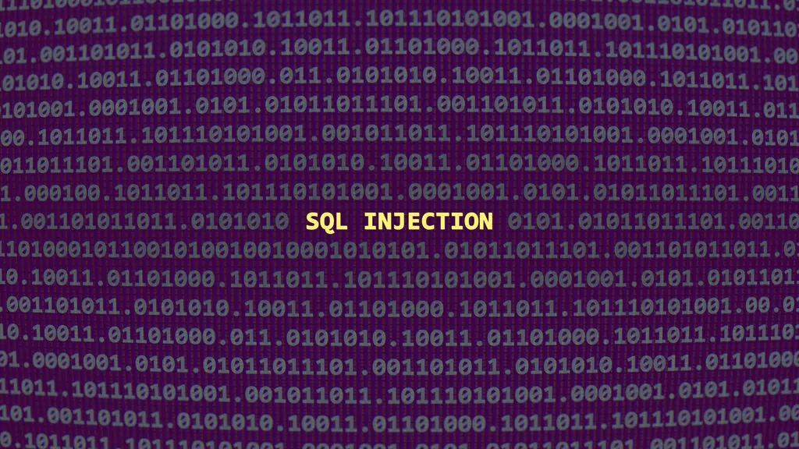

05 — notes / threats & attacks
CWE-89: SQL Injection
The crown jewel of web vulnerabilities

SQL Injection (SQLi) is one of the most notorious and impactful web vulnerabilities. It occurs when a web application builds a database query using unvalidated user input, allowing attackers to manipulate SQL commands and gain unauthorized access to data.
When software fails to neutralize special characters (like ', ", ;, --), attackers can alter how queries are executed — often with devastating results.
What Is SQL?
Structured Query Language (SQL) is the standard language for managing and manipulating relational databases.
It allows developers to:
- Retrieve information (
SELECT) - Add or modify data (
INSERT,UPDATE,DELETE) - Control access (
GRANT,REVOKE)
How SQL Injection Happens
A vulnerable app constructs SQL commands directly from user input without proper sanitization.
# Vulnerable example
username = request.GET['user']
query = "SELECT * FROM users WHERE username = '" + username + "';"
cursor.execute(query)
Input: ' OR '1'='1 → Final query: SELECT * FROM users WHERE username = '' OR '1'='1';
The Login Bypass
| Input Field | Attacker Enters | Result |
|---|---|---|
| Username | ' OR '1'='1 | Bypasses authentication |
| Password | anything | Ignored — always true |
Why SQL Injection Is Dangerous
| Impact | Description |
|---|---|
| Data Breach | Steal credentials, PII, credit cards |
| Data Loss | Modify or delete records |
| Full Compromise | RCE via DB in extreme cases |
Mitigation Strategies
1. Prepared Statements
- Define query structure first
- Bind user input as data, never code
SELECT * FROM users WHERE username = ? AND status = ?;2. Input Validation + Least Privilege
- Whitelist allowed characters
- Never run DB as root/sa
- Hide real errors from users
Remember: SQL Injection thrives where trust is misplaced. Validate, parameterize, and never trust user input.
quick review
tap to revealWhat is SQL Injection?
Inserting malicious SQL via unvalidated input to manipulate database operations.
What does ' OR '1'='1 do?
Makes the WHERE clause always true, bypassing login authentication.
Best prevention for SQLi?
Prepared statements — input is treated as data, never as executable SQL.
What else can SQLi lead to?
RCE via database features like xp_cmdshell; full server compromise.
key terms
- CWE-89
- SQL Injection weakness
- SQLi
- SQL Injection attack type
- Prepared Statement
- Pre-compiled SQL preventing injection
- Auth Bypass
- Access without valid credentials
- Tautology
- Always-true SQL condition
- Least Privilege
- DB user has minimal permissions